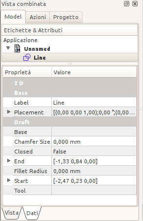

|
| Posizione nel menu |
|---|
| Draft → Linea |
| Ambiente |
| Draft, Architettura |
| Avvio veloce |
| L I |
| Vedere anche |
| DWire |
Crea un segmento tra due punti nel piano di lavoro corrente. Il segmento assume il tipo di linea e il colore impostati in precedenza nella Barra dei comandi e modificabili tramite la stessa o nella scheda Vista combinata → Proprietà → Vista. Lo strumento Linea si comporta esattamente come lo strumento DWire di Draft, tranne che si disattiva dopo che sono stati definiti due punti.

Utilizzo
- Premere il pulsante
 Linea o premere i tasti L e I
Linea o premere i tasti L e I - Fare clic su un primo punto nella vista 3D, o digitare le sue coordinate
- Fare clic su un secondo punto nella vista 3D, o digitare le sue coordinate
Opzioni
- Premere X, Y o Z e muovere il puntatore nell'area grafica dopo il primo punto per vincolare il secondo punto su uno specifico asse. In questo caso rimane attivo solo il campo corrispondente all'asse selezionato e in esso è mostrata la posizione corrente del cursore.
- Per inserire le coordinate manualmente, è sufficiente inserire il loro valore, poi premere INVIO per ogni componente X, Y e Z. In questo caso è bene tenere il puntatore del mouse fuori dall'area di lavoro in quanto un suo movimento accidentale cattura e inserisce nel campo di input le coordinate a cui si trova e costringe a ripetere l'inserimento.
- Premere R oppure fare clic sulla casella di controllo per selezionare o deselezionare la modalità Relativo. In modalità Relativo, le coordinate del secondo punto sono relative al primo. In caso contrario, sono assolute, a partire dal punto di origine (0,0,0).
- Premere T oppure fare clic sulla casella di controllo per selezionare o deselezionare la modalità Continua. In modalità Continua, al termine dell'operazione, lo strumento Linea si riavvia automaticamente e permette di disegnare un nuovo segmento senza dover ripetere il comando. I diversi segmenti costruiti in questo modo sono oggetti indipendenti, a differenza di quelli costruiti con DWire che sono invece parte di una unica polilinea.
- Premere CTRL mentre si disegna per ancorare il proprio punto al punto agganciabile più vicino, indipendentemente dalla distanza.
- Premere SHIFT mentre si disegna per vincolare orizzontalmente o verticalmente il secondo punto rispetto al primo.
- Premere CTRL+Z o premere il pulsante Annulla per annullare l'ultimo punto inserito. Questa opzione permette di annullare a ritroso tutti punti inseriti.
- Premere ESC o premere il pulsante Cancella per uscire dal comando Linea attivo.
- Se sono selezionate diverse Linee Draft connesse, esse possono essere trasformate in una unica polilinea premendo il pulsante Promuovi.
Proprietà
Vista
Sono disponibili le Proprietà standard di visualizzazione.
Dati
|  |
2D
Draft
|
{kind=link}
Script
Lo strumento Linea può essere utilizzato nelle macro e dalla console di Python tramite la seguente funzione:
makeLine (Vector, Vector)
- Crea una linea tra i due vettori dati.
- Sono usati il tipo di linea e il colore correnti.
- Viene creato un nuovo oggetto.
Esempio:
import FreeCAD, Draft Draft.makeLine(FreeCAD.Vector(0,0,0),FreeCAD.Vector(2,0,0))